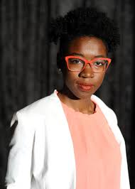

Joy Buolamwini
Joy Buolamwini is a computer scientist and AI researcher who founded the Algorithmic Justice League to fight bias in artificial intelligence. As a Black woman in tech, she has exposed racial and gender bias in AI systems, particularly facial recognition software.
Contributions:
- Founded the Algorithmic Justice League
- Created the “Gender Shades” research project
- Advocates for fairness and accountability in AI
Learn More:

Reshma Saujani
Reshma Saujani founded Girls Who Code in 2012 to help close the gender gap in technology and expand access to computer science education.
Contributions:
- Founded Girls Who Code
- Founded Moms First to support working parents
Why she’s my tech hero
She created long-lasting programs that made tech education accessible beyond individual companies or trends.